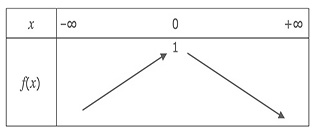
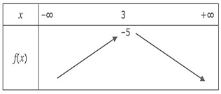

Petit jeu :D ..
Choisis le bon tableau de variation pour l'equation:
–2(3 – x)² – 5


Oust ! Oust! Voilà ce que criait Luigi lorsqu'il a aperçu le gros Bowser. Mario, rouge de colère se mit à courrir vers Bowser mais celui-ci lui jetta lichie empoisonné qui brulèrent les yeux de notre chère ami.
Luigi, en grande forme vola au secours de son ami en jettant sa clé de douze sur la gueule de Bowser.
Il esquiva cette attaque mais quelques secondes après, Mario à son tour lui jetta une clé à molette dans la patte ce qui le fit tombé.
En grande detresse, le gros Bowser donna les clefs du cachot à Luigi et Mario pour qu'ils puissent sauver Goloum et Aléa.
Grâce à toi, le monde se porte mieux.
Pour voir la suite de l'histoire cliquez ici